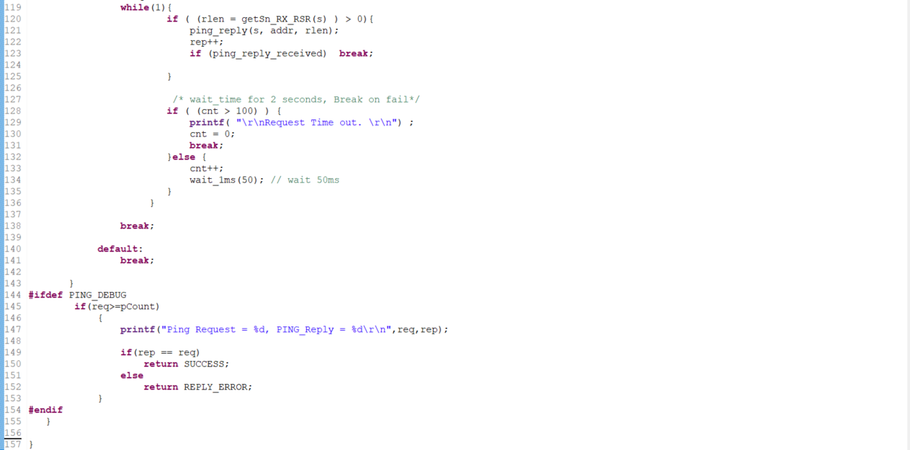
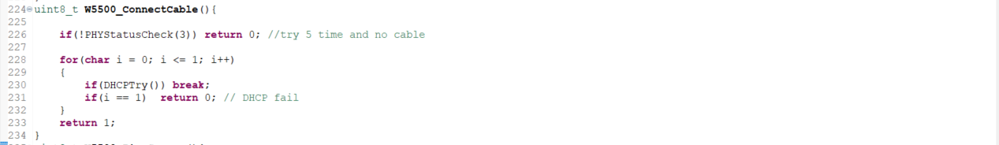
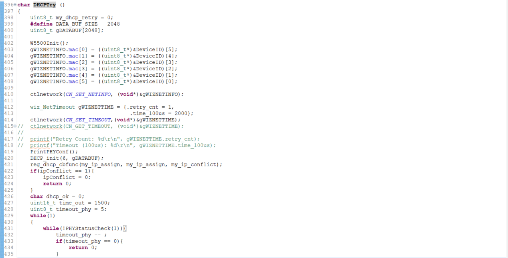
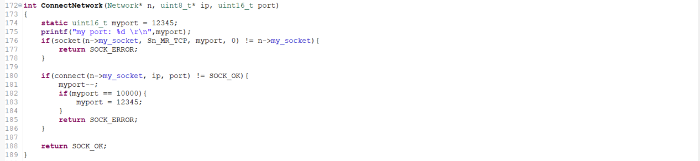

File .h: Khai báo biến: Hàm ping auto dùng với tham số là socket và ip address. socket được truyền vào là socket 0. Lưu ý địa chỉ IP addr có thể bị thay đổi nếu thiết bị không thể ping tới IP Address thì sẽ bị thay đổi tới cổng Gateway Hàm ping count sử dụng để đếm các số lần ping thành công, chưa xài nên chưa biết 2 hàm độc lập.  Chi tiết mã: https://github.com/s2nmt/pingLanW5500/tree/main/ping_w5500
Hàm kết nối MQTT. Sau đây chỉ hướng dẫn hàm ứng dụng còn chi tiết thư viện tham khảo thư viện của W5500
Khai báo các thông tin như địa chỉ MAC: lưu ý địa chỉ MAC giữa các thiết bị phải khác nhau. Nếu địa chỉ Mac giống nhau server sẽ hiểu là cùng một thiết bị thì sẽ cấp cùng 1 IP dẫn đến trường hợp IP bị conflict
DHCP = NETINFO_DHCP đây là cấp ip động cho thiết bị. Đổi thành Static thì là ip tĩnh
Network n và Client c: Khởi tạo hai biến toàn cục một là cho network để truy cập socket, client dùng để kết nối mqtt. Socket được kết nối là socket 1
Các thông số khai báo cho mqtt
opts.nodelimiter = 0;:
nodelimiter là một cờ để xác định xem có sử dụng dấu phân tách (delimiter) hay không khi nhận các gói tin từ broker MQTT.
Khi nodelimiter được đặt thành 0, điều này có nghĩa là thư viện MQTT sẽ sử dụng dấu phân tách để phân tách các gói tin.
Nếu nodelimiter được đặt thành 1, điều này có nghĩa là không sử dụng dấu phân tách và toàn bộ gói tin được coi là một chuỗi liên tục.
opts.delimiter = (char*)"\n";:
delimiter là dấu phân tách được sử dụng khi nodelimiter được đặt thành 0.
Trong trường hợp này, dấu phân tách được đặt thành dấu xuống dòng ("\n").
Dấu phân tách này được sử dụng để phân tách các gói tin MQTT khi chúng được nhận từ broker MQTT.
opts.showtopics = 0;:
showtopics là một cờ để xác định xem liệu các topic của các gói tin MQTT cần được hiển thị (in ra) hay không.
Khi showtopics được đặt thành 0, thư viện MQTT sẽ không hiển thị (in ra) các topic của các gói tin.
Nếu showtopics được đặt thành 1, các topic của các gói tin MQTT sẽ được hiển thị (in ra) cùng với nội dung của chúng.Hàm messageArrive là hàm nhận tin từ server mqtt. Hàm này được subcribe khi hàm MQTTYield được thực hiện.

Hàm connect cable để kiểm tra hiện tại có cắm dây cáp mạng không nếu có thì cấp DHCP trong hàm DHCP try.

Thay đổi địa chỉ MAC theo ID bởi vì module này không có địa chỉ MAC cố định. Việc thay đổi địa chỉ MAC để tránh trường hợp IP conflict
Thay đổi thời gian timeout và set timeout lại. Trong phần w5500 thì có hàm retry cố định bằng 8 có nghĩa là dù không có mạng thì khi ta public vẫn báo thành công 8 lần mới báo thất bại. đồng thời khi bị lỗi mạng thì việc chặn port trong mạng LAN diễn ra một thời gian dài hơn.
Việc để biến time_out = 1500 để tăng thời gian server cấp IP cho thiết bị. Việc để giá trị này quá thấp có thể dẫn tới trường hợp Server chưa đủ thời gian cấp IP cho thiết bị thì thiết bị đã tự thoát ra ngoài.
Hàm PHYStatusCheck dùng để kiểm tra có cáp mạng hay không. nếu trong khoảng thời gian dài mà không có cap mạng thì thoát ra khỏi vòng lặp.
Tạo một network mới và tiến hành connect với network

Việc tạo biến static port để mỗi khi bị chặn port không kết nối được với socket thì thiết bị tự đổi port khác trong lần kết nối tiếp theo ngăn chặn trường hợp bị chặn port.
Hàm khởi tạo các giá trị để connect mqtt
Lưu ý đối với hàm disconnect mqtt thì phải disconnect với port nếu không khi kết nối lại sẽ bị chặn port.
Hàm mqttyield phải luôn hoạt động thì khi subcribe mới nhận được dữ liệu. Gợi ý có thể dùng timer không cần phải 1 luồng để xử lý.
Chi tiết thư viện ứng dụng: https://github.com/s2nmt/pingLanW5500/tree/main/LAN_W5500
Code này hoạt động tạm ổn không bị treo tuy nhiên timer trong code không được khởi tạo. Nếu được thì tạo cho nó một timer (cái này tui chưa có làm ....)